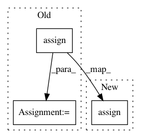

2ae494d00ce9fcf11fe85517c7136d205be4d545,skater/core/global_interpretation/interpretable_models/rule_lists.py,BayesianRuleLists,fit,#BayesianRuleLists#,90
Before Change
new_X = self.discretizer(X, self._filter_continuous_features(X, for_discretization_clmns)) \
if self.__discretize is True else X
data = new_X.assign(label=y_true)
data_as_r_frame = self.__r_frame(self.__s_apply(data, self.__as_factor))
self.__model = self.__r_sbrl.sbrl(data_as_r_frame, **self.model_params)
return self.__model
After Change
data = self.discretizer(X, self._filter_continuous_features(X, for_discretization_clmns)) \
if self.__discretize is True else X
data.assign(label=y_true)
data_as_r_frame = self.__r_frame(self.__s_apply(data, self.__as_factor))
self.__model = self.__r_sbrl.sbrl(data_as_r_frame, **self.model_params)
return self.__model
In pattern: SUPERPATTERN
Frequency: 3
Non-data size: 3
Instances
Project Name: datascienceinc/Skater
Commit Name: 2ae494d00ce9fcf11fe85517c7136d205be4d545
Time: 2018-02-18
Author: pramitchoudhary@ip-172-30-0-2.us-west-2.compute.internal
File Name: skater/core/global_interpretation/interpretable_models/rule_lists.py
Class Name: BayesianRuleLists
Method Name: fit
Project Name: zsdonghao/text-to-image
Commit Name: bd97dee4fc635d8aa8707c4fbac39e569e9f148d
Time: 2017-01-18
Author: i.mochaz@gmail.com
File Name: tensorlayer/files.py
Class Name:
Method Name: assign_params
Project Name: keras-team/keras
Commit Name: 442423e30d72aeb2f63cce7baee056b0d929930d
Time: 2019-07-01
Author: psv@google.com
File Name: keras/backend/tensorflow_backend.py
Class Name:
Method Name: update